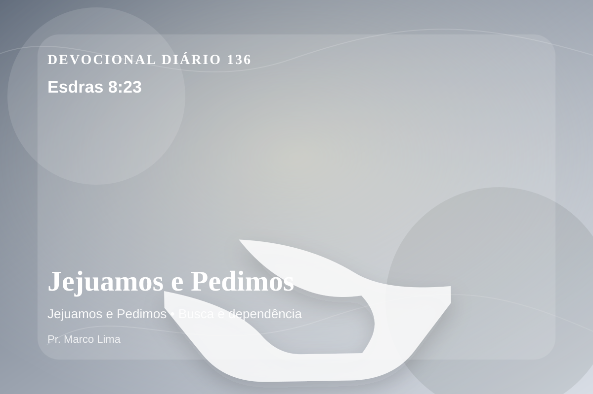

Jejuamos e Pedimos
Nós, pois, jejuamos, e pedimos isto ao nosso Deus; e ele atendeu às nossas orações.
Pensamento
Esdras 8:23 coloca diante de nós uma verdade capaz de atravessar a rotina, confrontar o coração e renovar a esperança em Deus.
Jejum e oração expressam dependência pública do Senhor. Esdras ensina que planejamento e fé não competem; a jornada precisa ser entregue a Deus com humildade.
O tema de jejuamos e pedimos precisa ser recebido com simplicidade e seriedade. O Senhor não usa esta passagem para alimentar vaidade espiritual, mas para formar obediência sincera. Este tema aponta para a maneira como Deus forma o coração do Seu povo por meio da Palavra. A aplicação correta não nasce de frases soltas, mas de uma leitura reverente, contextual e obediente do texto bíblico.
Não transforme este devocional em informação religiosa. Pare por alguns instantes, nomeie diante de Deus aquilo que precisa mudar e peça um coração pronto para obedecer.
Arrependimento não é apenas sentir peso na consciência; é voltar-se para Deus, abandonar o caminho que entristece o Senhor e confiar que a graça de Cristo é suficiente para perdoar e transformar.
Este é o evangelho que sustenta toda aplicação: Jesus Cristo morreu pelos pecadores, ressuscitou em vitória e chama cada pessoa a responder com fé, arrependimento e uma vida rendida ao Seu senhorio.
O simples evangelho de Cristo Jesus continua sendo suficiente: arrependa-se, creia, receba perdão e caminhe em obediência pelo poder do Espírito Santo.
Não espere sentir tudo para obedecer. Comece com fidelidade no próximo passo, confiando que Deus sustenta quem responde à Sua voz.
Para Praticar Hoje
- Leia Esdras 8:23 lentamente e destaque uma palavra ou expressão central do texto.
- Confesse a Deus um pecado, resistência ou frieza espiritual que esta Palavra revelou.
- Declare sua fé em Jesus Cristo e pratique hoje uma atitude concreta de arrependimento e obediência.
Oração
Senhor Deus, eu recebo a Tua Palavra em Esdras 8:23 com reverência. Reconheço que preciso de arrependimento, perdão e nova vida. Creio que Jesus Cristo morreu pelos meus pecados e ressuscitou para me salvar. Lava meu coração, governa minha vida e conduz-me em obediência simples ao Teu evangelho. Em nome de Jesus. Amém.
{kind=link}